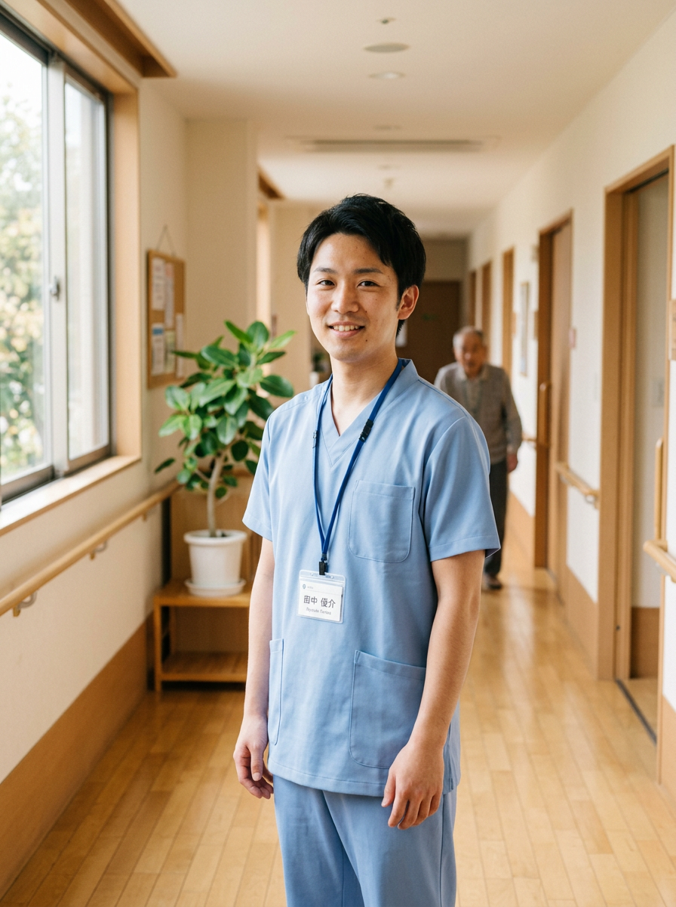
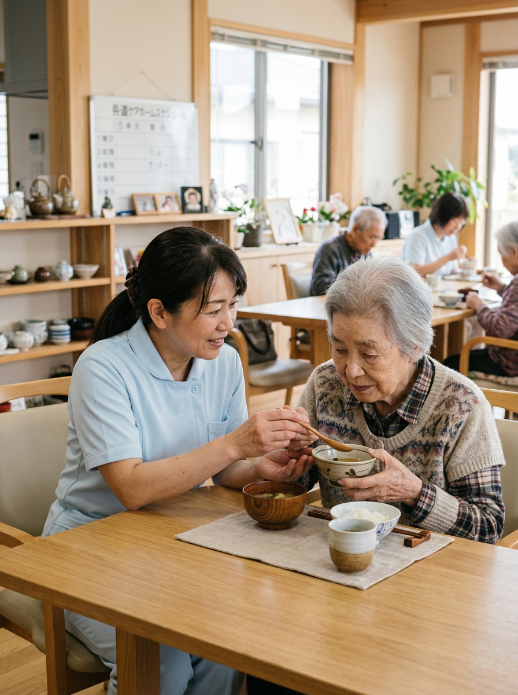
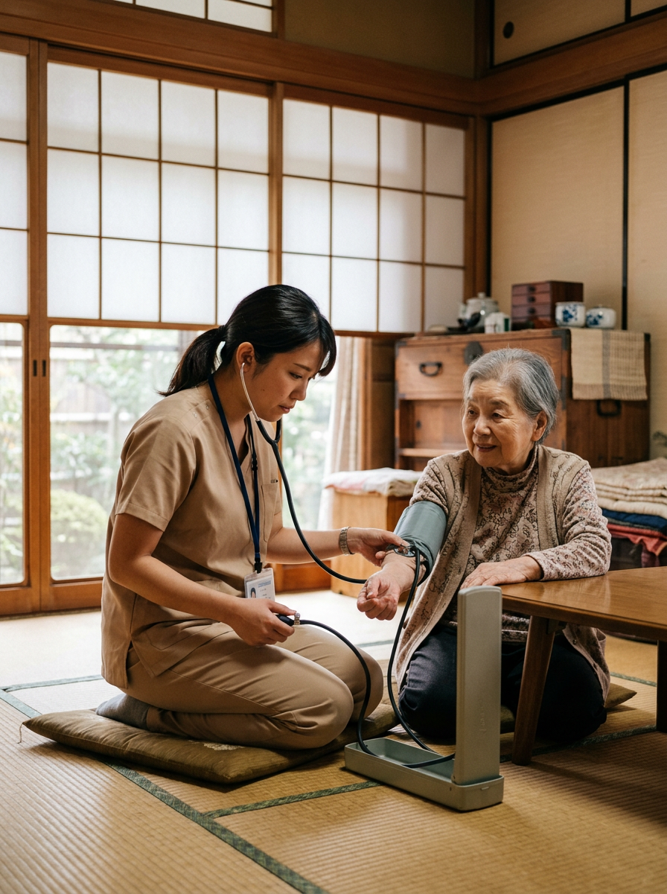
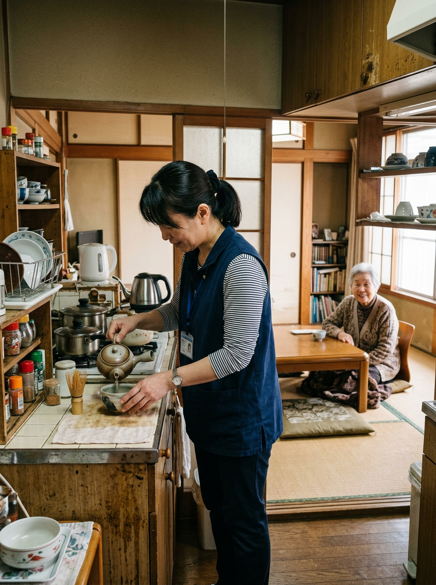
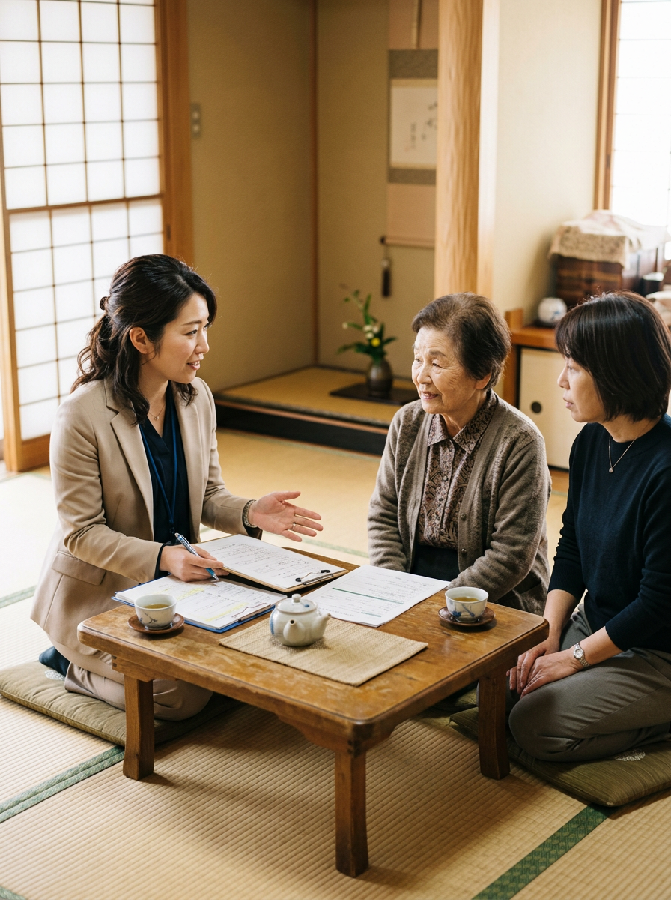
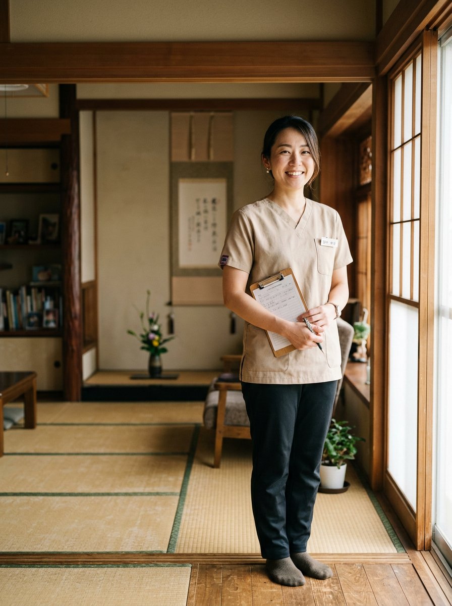

特養 / 介護スタッフ
中村 さん
「ありがとう」を毎日、直接受け取れる仕事に出会えました。
「やりがい」だけに、寄りかからない。
長く続けられる介護のしくみを、地域とともに育てています。
福岡・鹿児島の暮らしの近くで、ご利用者とそのご家族の人生に寄り添います。地域に根ざすことが、私たちのいちばんの強みです。
休めること、相談できること、評価が見えること。働く理由を気持ちだけに任せず、しくみでお互いを支え合えるチームをつくっています。
記録や報告に追われない毎日のために、現場目線で IT 化を進めています。「人にしかできないケア」のための時間を、もっと豊かに。
新人もベテランも、お互いから学ぶ。資格取得の費用補助、外部研修への参加、メンター制度。学びを止めない仲間を、私たちは応援します。
介護・看護を中心に、リハビリ、相談員、本部、IT エンジニアまで。
あなたの「やってみたい」を、ここから探してください。

特養・グループホーム・デイサービスで、ご利用者の暮らしを支える中核職種。

訪問・施設・日勤・夜勤。医療面から、ご利用者の生活を支える仕事です。

ご自宅で生活援助・身体介護を提供。直行直帰の柔軟な働き方が選べます。

ケアプランの作成と関係者調整。ご利用者主体の支援を実現する役割です。
介護報酬請求や採用補助。介護の現場を、裏方から確実に支えます。
介護現場の業務効率化を、開発でつくる。介護業界未経験から歓迎します。
長く働ける、無理しすぎない。そんな現場を、数字でもお伝えします。
現場のリアルと、ここで働く理由を、先輩スタッフが自分の言葉で語ります。
※ Phase A モックは仮原稿です。

「ありがとう」を毎日、直接受け取れる仕事に出会えました。

病院では見えなかった、その人の生活全体を支える看護がここにあります。
現場の声を直接聞いて、その場で改善を試せる距離感が、ここの強みです。
採用担当より、一人ひとり丁寧にご案内します。
お急ぎの場合は、ご応募時にお知らせください。
応募ボタンから、ジョブカン応募フォームにて必要事項をご入力ください。
3〜5 営業日以内に、書類選考の結果をご連絡いたします。
対面またはオンラインで 1〜2 回。現場見学もご希望に応じて。
入職日のご相談、入職前研修まで丁寧にサポートします。
育休取得・復職のリアルな声を、スタッフ自身が綴ります。
子育てしながら介護のしごとを続けるためのヒントが、ここに。
採用に関するお知らせと、現場や働き方に関するコラムを発信しています。
気になる職種があれば、まずはエントリーから。あなたとお会いできる日を、楽しみにしています。
応募フォームが開けないときは、お電話 (092-000-0000) または recruit@aozora-cg.com までどうぞ。